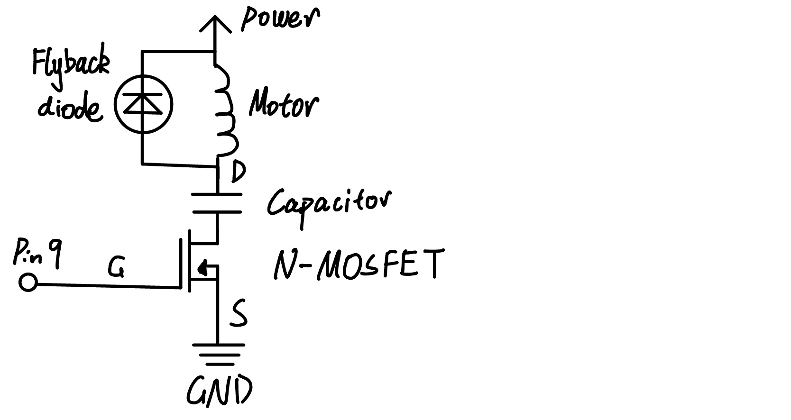

Circuit:

Here is my circuit, I connected the N-MOSFET with pin 9 and I set Pin 4 as sendPin and Pin 2 as receivePin for my capacitive touch sensor. Since the external power supply is a 9V battery and my motor is a 3V-6V motor, I used a power supply module to convert the power to 5V.
Firmware:
#include
CapacitiveSensor cs_4_2 = CapacitiveSensor(4,2); // set Pin 4 as sendPin and Pin 2 as receivePin
void setup() {
pinMode(9, OUTPUT); // set the micro output pin 9 as an output
cs_4_2.set_CS_AutocaL_Millis(0xFFFFFFFF); // turn off autocalibrate
Serial.begin(9600); // start serial communication and set the rate at 9600
}
void loop() {
long start = millis();
long sensorValue = cs_4_2.capacitiveSensor(30); // Retrieve the sensor value with 30 samples
Serial.print(millis() - start); // print the execution time in milliseconds
Serial.print("\t"); // tab
Serial.println(sensorValue); // print the sensor value
delay(10); // delay for 10 ms to limit data that print out to serial port
// if the sensor value is greater than 300(through observation of serial monitor),
// turn the motor to 100% PWM, else, stop the motor
if (sensorValue > 300) {
analogWrite(9, 255);
} else {
analogWrite(9, 0);
}
}
Note: Some part of code used the example code from class.
https://playground.arduino.cc/Main/CapacitiveSensor/index-2.html
High(er) voltage and transistors!
 voltage and transistors!.gif)
This is my final result, when I touch the mental chopstick, the motor will start to run at a maximum speed, and when I stop touching it, it will stop.
Questions:
Question 1: What is the absolute maximum amount of current between pins 2 and 3?
The maximum amount of current between pins 2 and 3 is 37.2A.
Question 2: Draw a schematic for a circuit with using at least your arduino, a DC motor, a flyback diode, and capacitors between power and ground. Find parts with datasheets you could use for each of these schematic components.

Question 3: Draw a schematic using at least your arduino, this chip, and two motors. Write (pseudo) code that shows how you would move the motors both forward, both back, then one forward one back, and one back then forward.
void setup() {
pinMode(1, OUTPUT);
pinMode(2, OUPUT);
pinMode(7, OUTPUT);
pinMode(9, OUTPUT);
pinMode(10, OUTPUT);
pinMode(11, OUTPUT);
}
void loop() {
digitalWrite(1, HIGH);
digitalWrite(9, HIGH);
digitalWrite(2, LOW);
digitalWrite(7, HIGH);
digitalWrite(10, LOW);
digitalWrite(11, HIGH);
delay(2000);
digitalWrite(1, HIGH);
digitalWrite(9, HIGH);
digitalWrite(2, HIGH);
digitalWrite(7, LOW);
digitalWrite(10, HIGH);
digitalWrite(11, LOW);
delay(2000);
digitalWrite(1, HIGH);
digitalWrite(9, LOW);
digitalWrite(2, LOW);
digitalWrite(7, HIGH);
delay(2000);
digitalWrite(2, HIGH);
digitalWrite(7, LOW);
delay(2000);
digitalWrite(1, LOW);
digitalWrite(9, HIGH);
digitalWrite(10, HIGH);
digitalWrite(11, LOW);
delay(2000);
digitalWrite(10, LOW);
digitalWrite(11, HIGH);
delay(2000);
}